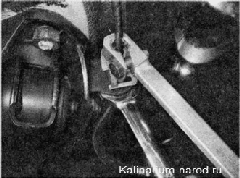
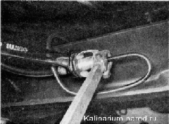

|
Для выполнения работы потребуется специальный ключ для штуцеров тормозных трубок.
Снятие
1. Подготавливаем автомобиль к выполнению работы.
2. Очищаем от грязи и коррозии соединения наконечников тормозного шланга и трубок. Обрабатываем штуцеры трубок проникающей смазкой.
Предупреждение!
При выполнении следующей операции следите за тем, чтобы при отворачивании штуцера трубка не вращалась вместе с ним. Если трубка "закисла» в штуцере, замените ее.
3. Удерживая верхний конец шланга от проворачивания рожковым ключом на 15 мм, специальным ключом ослабляем затяжку штуцера трубки.

4. Окончательно выворачиваем штуцер рожковым ключом на 10 мм.
5. Для предотвращения утечки тормозной жидкости надеваем на конец тормозной трубки защитный колпачок штуцера прокачки рабочего цилиндра.
6. Выводим верхний наконечник тормозного шланга из отверстия кронштейна кузова.
7. Аналогичным образом отворачиваем трубку от нижнего наконечника тормозного шланга и освобождаем его, выводя из отверстия кронштейна, установленного на балке заднего моста.

8. Снимаем шланг с автомобиля.
Установка
1. Устанавливаем шланг в обратной последовательности.
2. Удаляем воздух из гидропривода тормозов и проверяем на отсутствие утечек соединения тормозного шланга и трубок. |